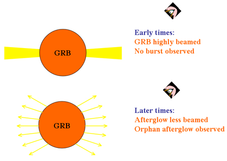

Gamma ray bursts (GRBs) are the most violent explosions in the Universe, with some releasing more energy in 10 seconds than what the Sun will emit in its entire 10 billion year lifetime! In order to be physically achievable, astronomers believe the large energies observed for GRBs need to be beamed into two narrow cones. We see the GRB only if this beamed energy is directed towards us here on Earth, and it is estimated that for every GRB we observe there are 500 more we do not.
While the GRB and early afterglow are highly beamed, it is expected that at later times energy will be emitted over wider angles. This would allow an off-axis observer to view a typical GRB afterglow that was not preceeded by the gamma ray emission. Although none have yet been observed, these orphan afterglows arise naturally through our current theories of GRB formation.

See also: gamma ray burst energies.